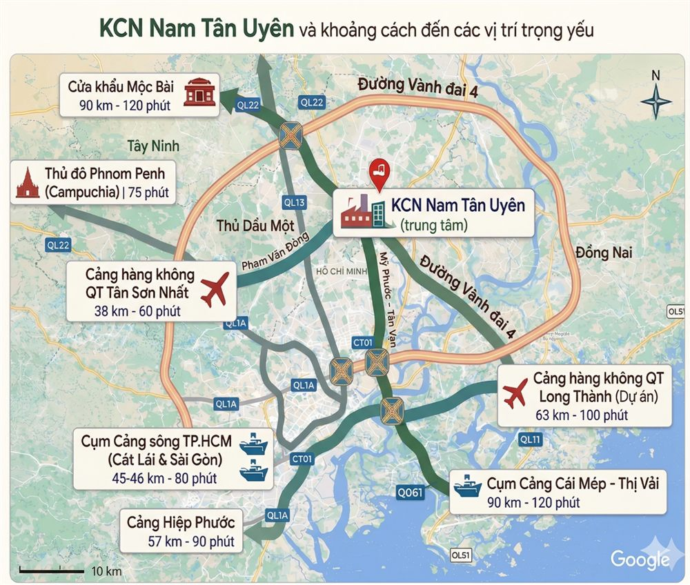
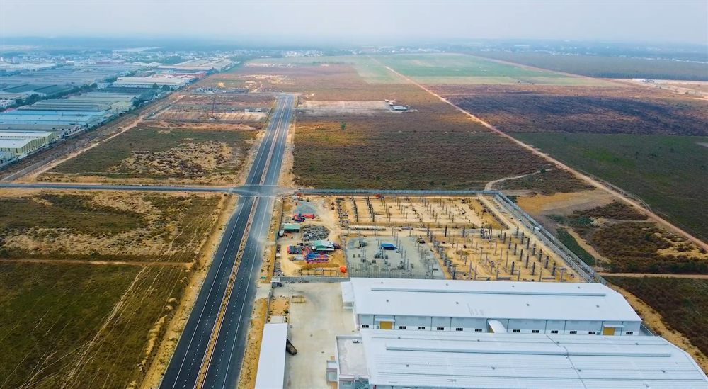

KCN Nam Tân Uyên nằm trong vùng kinh tế trọng điểm của thành phố Hồ Chí Minh và của cả Việt Nam với tốc độ phát triển kinh tế cao trong những năm qua và dự kiến trong những năm tới. Là nơi mà Chính Phủ Việt Nam tập trung khuyến khích phát triển đầu tư.

Tuyến đường Vành đai 4 bắt đầu từ Nhà Bè có các cảng quốc tế nằm dọc trên Sông Soài Rạp, qua địa phận giáp ranh với tỉnh Tây Ninh (Long An cũ) kết nối với đường Xuyên Á về Củ Chi và đến Nam Tân Uyên sau đó sẽ tiếp tục đi đến Trảng Bom Đồng Nai và kết nối vào Quốc Lộ 1A, trong tương lai gần sau khi hình thành, đường vành đai 4 sẽ tạo một trục kết nối các khu vực kinh tế năng động đảm bảo hàng hóa lưu thông được dễ dàng chẳng những trong khu vực TP. Hồ Chí Minh – Đồng Nai – Tây Ninh mà còn kết nối với các nước trong khu vực Đông Nam Á bằng đường bộ.
Đặc điểm địa lý của KCN Nam Tân Uyên:
- Độ cao trung bình của đất 38m so với mặt nước biển, không có động đất hay tác động của thiên tai như bão lụt, lũ lụt...
- Độ ẩm trung bình hằng năm: 84%
- Nhiệt độ trung bình hằng năm: 27,3 độ C
- Lượng mưa trung bình hằng năm: 1,864mm
- Độ nén của đất: 1,6 - 2kg/cm2

Với điều kiện thiên nhiên ưu đãi như trên đã giúp cho nhà đầu tư thuận lợi trong việc xây dựng nhà xưởng ít tốn kém chi phí, kể cả việc mở rộng các hoạt động kinh doanh. Có các dịch vụ hỗ trợ như: bệnh viện, trường học, khu vui chơi giải trí cho các chuyên gia nước ngoài. Nguồn nhân lực dồi dào từ Tp. Hồ Chí Minh và các vùng lân cận, có cả các khu công nghệ cao, công nhân kỹ thuật lành nghề có kinh nghiệm trong các ngành công nghiệp.